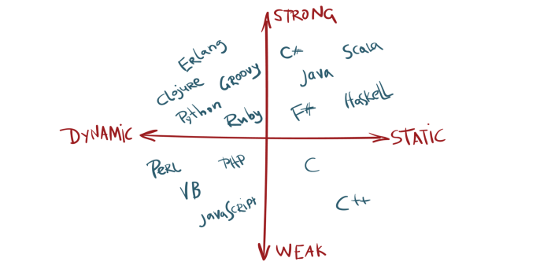

Dichiarazioni variabili, espressioni, statement e control flow non verrà elencato perché 99% uguale ai principali
linguaggi imperativi. Oltretutto JS si ispira alla sintassi di Java che è C# con la maiuscola, quindi
if, switch, for, do, break & continue sono identitci. Se siete comunque curiosi: JS early doc.
JS è weakly e dynamic typed, quindi:

// number
let age = 33;
// string
let name = 'Riccardo'
let greetings = `My name is ${name}`;
// boolean
let bold = true;
// array
let owns = ['Table', 'Some Dylan Dog', 42, true];
// objects
let riccardo = {
name: 'Riccardo',
owns: owns,
greetings: function(){
return `My name is ${name}`;
},
}
TL;DR: dichiara attraverso const o let sempre il più 'vicino' all'utilizzo
Quattro tipi per dichiarare una variabile:
var (pre ES6) (global o local scope, ma attenzione all'hoistinglet come var, ma block scopeconst block scope e costanteEsistono due tipi di scope (zona del codice in cui è definita una variabile):
inner scopeIIFE{},for, if)Look at Developer tools for variable examples
Ci sono tre metodi (e tutti con risultati diversi) per dichiarare le funzioni in JS:
// 1. dichiarazione
function helloWorld(params){
return 'Hello world';
}
// 2. Funzioni come valori
// differisce dalla prima per l'hoisting
let helloWorld = function(params){
return 'Hello world';
};
// 3. Arrow functions (> ES6)
// differisce dalle altre per this, che vedremo in futuro.
let helloWorld = (params) => {
return 'Hello world';
};
Javascript è nato come linguaggio per il web e quindi viene normalmente associato ad una serie di funzioni e
caratteristiche che però non sono 'native', ma sono implementate attraverso l'interprete che vive nel browser,
tra cui il DOM (Document Object Model) inteso come 'albero HTML' e altre API del browser (come
history, storage, ...)
document.getElementById('id-element');
document.getElementsByName('img');
document.getElementsByClassName('column');
document.querySelector("p")
document.querySelector("p.some-class")
document.querySelectorAll("p")
function replaceImages() {
let images = document.body.getElementsByTagName("img");
for (let i = images.length - 1; i >= 0; i--) {
let image = images[i];
if (image.alt) {
let text = document.createTextNode(image.alt);
image.parentNode.replaceChild(text, image);
}
}
}
Counter: 0